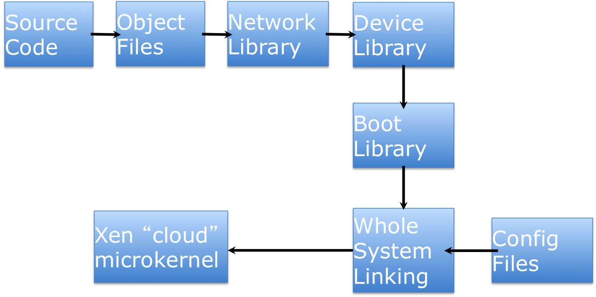
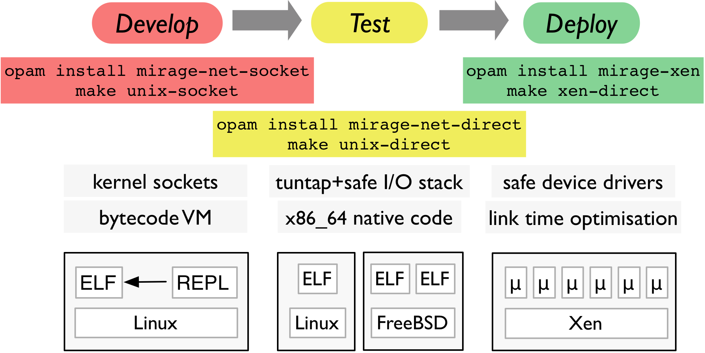
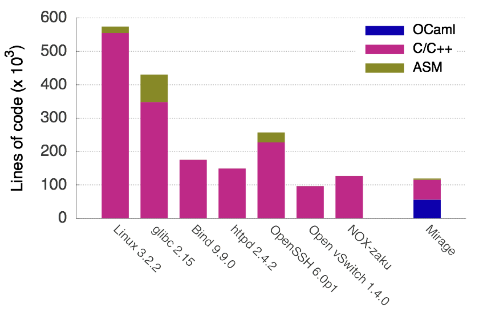
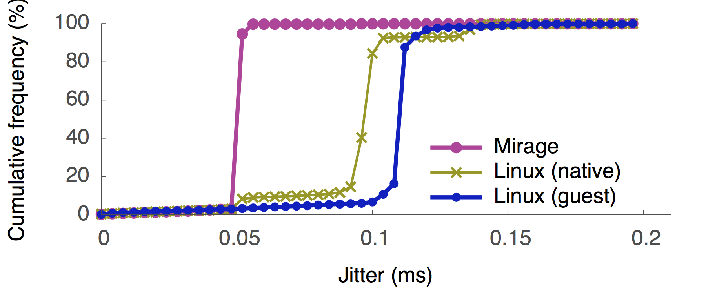
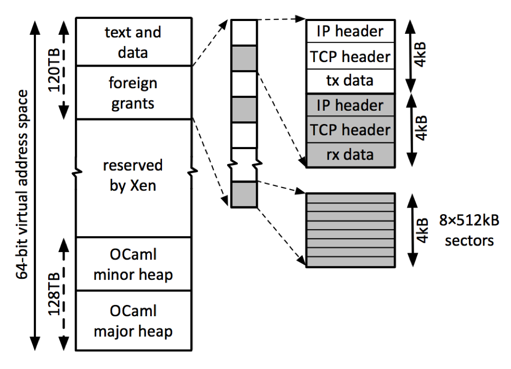

<section data-markdown="" class="title center">
  <script type="text/template">
    # __Mirage__: <br />Extreme Specialisation of<br /> Cloud Appliances

    Anil Madhavapeddy <small>University of Cambridge</small> [@avsm](http://twitter.com/avsm)
    <br />
    Richard Mortier <small>University of Nottingham</small> [@mort\_\_\_](http://twitter.com/mort___)
    <br />
    Dave Scott <small>Citrix Systems R&amp;D</small> [@mugofsoup](http://twitter.com/mugofsoup)
    <br />

    <div style="font-size: 24pt">
      [http://openmirage.org](http://openmirage.org)
      <br />
      [http://decks.openmirage.org/oscon13/](http://decks.openmirage.org/oscon13/#/)
      <br />
      [http://www.youtube.com/watch?v=2Mx8Bd5JYyo](http://www.youtube.com/watch?v=2Mx8Bd5JYyo)
    </div>
  </script>
</section>

<section>
  <section data-markdown="">
    <script type="text/template">
      ## The Cloud Threat Model

      

      <div class="fragment">
        

        

        

        <p class="bubble left"
           style="top: -344pt; left: 600pt; width: 4em" >
          Internet<br />
          SAN/NAS<br />
          Tenants<br />
          SDN
        </p>
      </div>
    </script>
  </section>

  <section data-markdown="">
    <script type="text/template">
      ## The Cloud Threat Model

      

      <div class="fragment">
        

        

        

        <p class="bubble  right"
           style="top: -440pt; left: -5pt; width: 11em">
          Type-safety in the application layer defeats several external threats.
        </p>
      </div>

      <div class="fragment">
        

        <p class="bubble "
           style="top: -730pt; left: 370pt; width: 12em">
          Type-safety in the kernel will make all external I/O safe, but at what
          cost?
        </p>
      </div>

    </script>
  </section>

  <section data-markdown="">
    <script type="text/template">
      ## The Cloud Threat Model

      

      <p class="bubble  left"
         style="top: -290pt; left: 380pt; width: 14.5em" >
        Most attacks never come from <strong>within</strong> a guest, only
        from external traffic. So why all these privilege checks?
      </p>
    </script>
  </section>

  <section data-markdown="">
    <script type="text/template">
      ## Key Design Insights

      

      <p class="bubble"
         style="top: -200pt; left: 120pt; width: 15em">
        The hypervisor gifts us a stable hardware interface. Cures the curse
        of library operating systems!
      </p>

      <p class="bubble left"
         style="top: -460pt; left: 400pt; width: 12em">
        Protocol-level compatibility between special-purpose cloud
        appliances, e.g. a webserver, a database VM.
      </p>

    </script>
  </section>
</section>

<section>
  <section data-markdown="">
    <script type="text/template">
      ## Unikernels!

      
      <p class="fragment bubble "
         style="top: -270pt; left: 190pt; width: 15.5em">
        Virtual machines are UNIX processes &ldquo;done right&rdquo; on the
        cloud.
      </p>
    </script>
  </section>

  <section data-markdown="">
    <script type="text/template">
      ## Contributions

      + The unikernel approach to building single-purpose appliances
        + Library OS + high level programming interface
        + Single-address space layout

      <br />

      + Evaluation of these techniques using a functional programming language
        (OCaml)
        + Benefits of type-safety need not damage performance
        + Static typing + modules = high level manipulation

      <br />

      + Language extensions for systems programming in OCaml

    </script>
  </section>

  <section data-markdown="">
    <script type="text/template">
      ## Current Virtual Appliances

      

      Compiler has to stop at userspace.

      Every level has a different API, calling convention, and privilege requirements.

    </script>
  </section>

  <section data-markdown="">
    <script type="text/template">
      ## Specialised Virtual Appliances

      
    </script>
  </section>

  <section data-markdown="">
    <script type="text/template">
      ## Specialised Virtual Appliances

      
    </script>
  </section>

  <section data-markdown="">
    <script type="text/template">
      ## Specialised Virtual Appliances

      
    </script>
  </section>

  <section data-markdown="">
    <script type="text/template">
      ## Progressive Specialisation

      

    </script>
  </section>
</section>

<section>
  <section data-markdown="">
    <script type="text/template">
      ## Microbenchmarks!

      Unikernel appliances are:

      + Smaller, both in kLoC &amp; image size
      + Boot faster, _at packet round-trip time timescales_
      + High performance
      + Type-safe

    </script>
  </section>

  <section data-markdown="">
    <script type="text/template">
      ## Appliance Image Size

      <table style="border-bottom: 1px black solid">
        <thead style="font-weight: bold">
          <td style="border-bottom: 1px black solid; width: 15em">Appliance</td>
          <td style="border-bottom: 1px black solid">Standard Build</td>
          <td style="border-bottom: 1px black solid">Dead Code Elimination</td>
        </thead>
        <tbody>
          <tr style="background-color: rgba(0, 0, 1, 0.2)">
            <td>DNS</td><td>0.449 MB</td><td>0.184 MB</td>
          </tr>
          <tr>
            <td>Web Server</td><td>0.674 MB</td><td>0.172 MB</td>
          </tr>
          <tr style="background-color: rgba(0, 0, 1, 0.2)">
            <td>Openflow learning switch</td><td>0.393 MB</td><td>0.164 MB</td>
          </tr>
          <tr>
            <td>Openflow controller</td><td>0.392 MB</td><td>0.168 MB</td>
          </tr>
        </tbody>
      </table>

      <br />
      All configuration and data compiled into the image by the toolchain.

      Live migration is easy and fun :-)
    </script>
  </section>

  <section data-markdown="">
    <script type="text/template">
      ## Boot Time

      

      _Unikernels are compact enough to boot and respond to network traffic in
      real-time._
    </script>
  </section>

  <section data-markdown="">
    <script type="text/template">
      ## How Large is Large?

      
    </script>
  </section>

  <section data-markdown="">
    <script type="text/template">
      ## Event Driven Co-Threads

      

      _Garbage collected heap management is more efficient in a single
      address-space environment. Thread latency can be reduced by eliminating
      multiple levels of scheduling._

    </script>
  </section>

  <section data-markdown="">
    <script type="text/template">
      ## Thread Scaling <small>single instance</small>

      

      _Threads are heap allocated values, so benefit from the faster garbage
      collection cycle in the Mirage Xen version, and the scheduler can be
      overridden by application-specific needs._

    </script>
  </section>

  <section data-markdown="">
    <script type="text/template">
      ## Block Storage

      

      _Additionally, reading __from__ a Mirage NAS-like storage VM achieves
      942MiB/s buffered, and 1.8GiB/s unbuffered._

    </script>
  </section>
</section>

<section>
  <section data-markdown="">
    <script type="text/template">
      ## Techniques

      Several implementation techniques give rise to these benefits:

      + Simplified memory management
      + Zero-copy IO buffer management
      + Hypervisor security extension for _VM sealing_ (`W^X`)

    </script>
  </section>

  <section data-markdown="">
    <script type="text/template">
      ## Memory Management <small>Specialised!</small>

      

      <p class="fragment bubble"
         style="top: -410pt; left: 195pt; width: 20em; font-size: 20pt">
        Compiled native source code and runtime statically linked with random
        start offset.
      </p>

      <p class="fragment bubble  right"
         style="top: -390pt; left:-66pt; width: 12em; font-size: 20pt">
        IO memory is mapped into a reserved area and can be distinguished.
      </p>

      <p class="fragment bubble  left"
         style="top: -280pt; left: 320pt; width: 12em; font-size: 20pt">
        OCaml heap is contiguous, with simpler write barriers as a result.
      </p>

    </script>
  </section>

  <section data-markdown="">
    <script type="text/template">
      ## Buffer Management <small>Zero-Copy IO</small>

      
    </script>
  </section>


  <section data-markdown="">
    <script type="text/template">
      ## Optional VM Sealing

      + Single address-space and no dynamic loading
        + `W^X` address space
        + Address offsets are randomized at compile-time

      + Dropping page table privileges:
        + Added freeze hypercall called just before app starts
        + Subsequent page table updates are rejected by Xen
        + Exception for I/O mappings if they are non-exec and do not modify
          any existing mappings

      <br />

      + Very easy in unikernels due to focus on _compile-time specialisation_
        instead of _run-time complexity_

    </script>
  </section>
</section>

<section>
  <section data-markdown="">
    <script type="text/template">
      ## Macrobenchmarks

      We have implemented several larger appliances.

      We discuss _deens_, our DNS server in detail here.

      We also have:

      + a simple webserver,
      + an OpenFlow Switch, and
      + an OpenFlow Controller.

    </script>
  </section>

  <section data-markdown="">
    <script type="text/template">
      ## DNS Server Code
      <pre style="box-shadow: none">
        <code style="font-size: 32px; line-height: 1.35; padding-left: 1em">
let main () =
  lwt zones = read key "zones" "zone.db" in
  Net.Manager.bind (fun mgr dev ->
    let src = `any_addr, 53 in
    Dns.Server.listen dev src zones
  )
        </code>
      </pre>

      <p class="fragment bubble "
         style="top: -360pt; left:70pt; width:10em">
        Cooperative threads as functions
      </p>

      <p class="fragment bubble "
         style="top: -430pt; left:400pt; width:10em">
        Statically evaluated configuration
      </p>

      <p class="fragment bubble  top"
         style="top: -310pt; left:300pt; width:10em">
        Functional callbacks
      </p>

      <p class="fragment bubble  top"
         style="top:-310pt; left:0pt; width: 10em">
        Libraries directly link to network stack
      </p>

    </script>
  </section>

  <section data-markdown="">
    <script type="text/template">
      ## DNS Server Performance <small>baseline</small>

      

      _Baseline figures, running __Bind__ (standard) and __NSD__ (high
      performance). NSD achieves around 70 kreqs/s._

    </script>
  </section>

  <section data-markdown="">
    <script type="text/template">
      ## DNS Server Performance <small>mirage</small>

      

      _Comparing against __Mirage__ appliance, with and without simple
      memoisation. This __algorithmic__ optimisation added just 6 lines of code._
    </script>
  </section>

  <section data-markdown="">
    <script type="text/template">
      ## DNS Server Performance <small>C/miniOS</small>

      

      _A rudimentary C-based appliance linking NSD directly against MiniOS. Poor
      user-space library performance vastly outweighs language effects._
    </script>
  </section>

  <section data-markdown="">
    <script type="text/template">
      ## Scaling <small>via Parallel Instances</small>

      

      _Request throughput for serving a simple static page using Apache on Linux
      vs. a Mirage appliance. Rather than pay the cost of interlocking for
      thread-level parallelism, we scale by running many instances of the Mirage
      appliance._

    </script>
  </section>

  <section data-markdown="">
    <script type="text/template">
      ## Openflow Controller

      

        _OpenFlow controller is competitive with NOX (C++), but much higher
        level. Applications can link directly against the switch to route their
        data._

    </script>
  </section>
</section>

<section>
  <section data-markdown="">
    <script type="text/template">
      ## Summary

      + __OCaml is the baseline language for all new code__
        + Our C runtime is small, and getting smaller
        + Is fully event-driven and non-preemptive
      + __Rewriting protocols wasn&rsquo;t that hard__
        + Not necessarily the best research strategy though
        + But an extremely useful learning experience
        + Tech transfer is vital
      + __Unikernels fit perfectly on the cloud__
        + Internet protocol building blocks
        + Seamless interop with legacy code through VMs
    </script>
  </section>

  <section data-markdown="">
    <script type="text/template">
      ## Pure OCaml Code <small>[github.com/mirage](http://github.com/mirage)</small>

      + Device drivers
        + netfront, blkfront
        + xenstore

      + Networking/Communication
        + IP/TCP/UDP/DHCP/DNS(SEC) (v4)
        + HTTP, SSH, OpenFlow (controller/switch)
        + vchan IPC

      + Storage
        + NFS, FAT32
        + &lt;[http://arakoon.org](http://arakoon.org)&gt; distributed k/v store
        + 9P :-)
    </script>
  </section>

  <section data-markdown="">
    <script type="text/template">
      ## Mirage Online

      + Website, &lt;[http://www.openmirage.org](http://www.openmirage.org)&gt;
       + Code, &lt;[http://github.com/mirage](http://github.com/mirage)&gt;
      + O'Reilly OCaml book, &lt;[http://realworldocaml.org](http://realworldocaml.org)&gt;

      <br />

      + OPAM package manager
        + Allows constraints to be applied to package installation
        + __Very__ useful for managing assembly of the many small OCaml
          modules that construct a Mirage appliance
        + &lt;[http://opam.ocamlpro.com](http://opam.ocamlpro.com)&gt;

    </script>
  </section>

  <section data-markdown="">
    <script type="text/template">
      ## Key Research Directions

      + __Interoperability &mdash; with billions of VMs out there__
        + A unikernel per-language?
        + Interconnect strategies? Heap sharing?
        + Formal method integration easier or harder?
      + __Coordination &mdash; planetary scale computers__
        + Resources are highly elastic now.
        + How to coordinate a million microkernels?
        + &ldquo;Warehouse Scale Computing&rdquo;
      + __Library Applications &mdash; where are they?__
        + Irminsule, a git-like functional distributed database
        + Beanstalk, a self-scaling web server
    </script>
  </section>

  <section data-markdown="">
    <script type="text/template">
      ## __We're hiring!__ <small>Must enjoy open source!</small>

      + OCamlLabs, Cambridge, UK
        + &lt;[http://www.cl.cam.ac.uk/projects/ocamllabs](http://www.cl.cam.ac.uk/projects/ocamllabs)&gt;
        + Real world functional programming with OCaml
        + Need compiler hackers, protocol heads, PL/type theory systems

      <br />

      + Networks-as-a-Service, University of Nottingham, UK
        + &lt;[http://bit.ly/13sBjjC](http://bit.ly/13sBjjC)&gt; <br />
          (2 posts, 3 years, deadline __Friday August 2nd__)
        + Joint with University of Cambridge &amp; Imperial College
        + Network virtualisation for millions of microkernel apps
        + Need Mirage hackers, network protocol experts, graph theorists

    </script>
  </section>

  <section data-markdown="">
    <script type="text/template">
      ## &lt;[http://twitter.com/mort___](http://twitter.com/mort___)&gt;

      <p style="font-size: 48px; font-weight: bold;
                display: float; margin-top: 3em; padding: 2ex 2em;
                text-align: center">
        Thanks! Questions?
      </p>

      <p style="font-size: 40px;
                display: float; padding: 2ex 2em;
                text-align: center">
        (...and please rate the talk!)
      </p>

    </script>
  </section>
</section>
